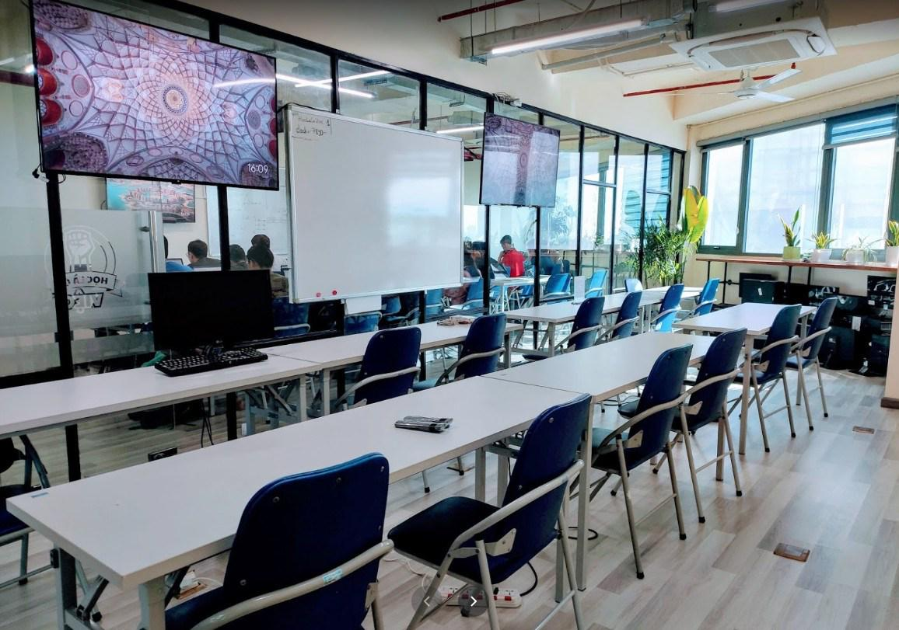

Hiện tại các khóa Lộ trình Java Spring Boot dài hạn 7 tháng https://java.techmaster.vn/ với các môn học chính: Java core, Cấu
trúc dữ liệu và giải thuật, Database, Spring Boot đang rất cần bổ sung giảng viên cho các khóa học sắp tới. Nếu
anh chị có thời gian rảnh buổi tối và mong muốn thử sức mình trong vai trò mới “giảng viên”, hãy liên hệ với
chúng tôi.

Tại sao chọn dạy tại Techmaster mà không phải một trung tâm khác:
Techmaster đã có 11 năm đóng góp cho ngành đào tạo CNTT, đạt được uy tín tốt trên thị trường.
Môi trường cơ sở vật chất hiện đại, thoáng đãng.
Hệ thống giáo trình đã xây dựng sẵn đầy đủ, đẹp, chi tiết, với đầy đủ tính năng thuận tiện sử dụng cho giảng
viên và học viên. (tạo bài giảng slides, text, code, ảnh, upload videos, quiz, nộp bài, chấm điểm)
Được training kĩ năng giảng dạy bởi CTO Techmaster >25 năm kinh nghiệm
Hệ thống tính lương tự động chính xác, dễ theo dõi.
Đội ngũ tuyển sinh, quản lý lớp nhiệt tình support, giúp PR thương hiệu cá nhân cho giảng viên.
Mô tả công việc
Giảng dạy 1 tuần 2- 3 buổi khung giờ 18:30 - 21:30. Chấm, chữa bài tập, giải đáp thắc mắc cho học viên. Khóa học
đã có đầy đủ giáo trình, giảng viên mới không phải soạn giáo trình mà chỉ khuyến khích góp ý, bổ sung thêm các
ví dụ mẫu. Giảng viên chủ động sắp xếp công việc và đăng kí lịch dạy theo từng lớp.
Yêu cầu: có ít nhất 2 năm kinh nghiệm trong lĩnh vực sẽ tham gia giảng dạy.
Chương trình đào tạo giảng viên trẻ
1- Techmaster sẽ đào tạo 5 buổi: 3 buổi kỹ năng, 2 buổi giảng viên thực hành đứng lớp
2- Giảng viên trẻ được học kỹ năng lên khung giáo trình, code ví dụ mẫu, quay video bài giảng
3- Vẽ hình minh hoạ Visual Thinking
4- Cập nhật kỹ năng sư phạm để phù hợp với nhu cầu Micro-learning
Techmaster sẽ liên hệ hẹn lịch phỏng vấn sớm nhất có thể. Sau khi pass phỏng vấn, anh chị sẽ tham gia chương
trình đào tạo giảng viên mới của Techmaster!
Niềm vui khi một học viên hoàn thành khóa học, tìm được việc làm, gửi lời cảm ơn thầy cô, thực sự khó diễn tả
thành lời. Mong sớm được chào đón anh chị tại các lớp học của Techmaster.